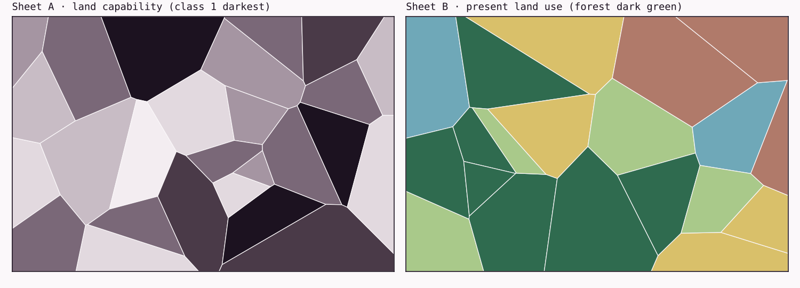

File 001
Before GIS Was Software: What Makes a Geographic Information System?
A GIS is defined less by the maps it draws than by the questions it lets you ask again. Most of the pieces existed long before the software did.
In 1967, Roger Tomlinson, the Canada Land Inventory’s data processing coordinator, put a forecast in writing. If the inventory gathered its data at the detail provincial and federal planners needed, his report estimated, “up to 30,000 map sheets will be generated at various scales,” and “lack of trained personnel makes it impossible to examine this amount of data manually in any sensible time.” It put the general problem more bluntly still: “a situation is reached where the amount of data precludes their use” (Tomlinson 1967).
That’s an unusual thing for a mapping program to put in writing. What worried the inventory was the questions it would need to ask of all those maps. Take one like this: how much land rated good for agriculture is under forest, county by county? Answering it meant laying a capability map over a land-use map, finding where the two agreed, and measuring the areas. Then you did it again for the next county, and again for the next question.
The size of the job depends on what you count. The report’s 30,000 sheets is a projection at planning detail, and the same report puts complete coverage of Canada’s farmed area at about 600 sheets at 1:50,000 (Tomlinson 1967). Tomlinson later recalled about 1,500 published maps of the commercially productive parts of the country (Tomlinson 2012). On any of those counts, the answer was a system that kept the maps as data and did the overlay and measurement itself.
That system, the Canada Geographic Information System (CGIS), usually gets the credit as the first GIS. Whether it deserves the title depends on what you think a GIS is, which is the real subject of this article.
The word came before anyone agreed on it
The phrase “geographic information system” shows up earlier than the story usually allows. The geographers Michael Dacey and Duane Marble wrote a technical report titled “Some Comments on Certain Technical Aspects of Geographic Information Systems.” Caitlin Dempsey of Geography Realm dates it to December 1965 and notes that it uses the phrase without explaining it, which suggests the term was already familiar. She also reports that its distribution list included Tomlinson (Dempsey 2012; Hessler 2015). We haven’t seen the report. Tomlinson knew it, though: his 1967 report cites it by title (Tomlinson 1967).
That 1967 report is more interesting than its reputation. Its title says “Geo-Information System,” but the body uses “geographic information system” at least five times, as in “Such a system is the geographic information system of the Canada Land Inventory” (Tomlinson 1967). Tomlinson’s 1968 paper, “A Geographic Information System for Regional Planning,” appeared in a symposium volume published in Australia (Tomlinson 1968). Esri’s 2012 anniversary feature captions it “the first known published use of the term,” and the IEEE milestone’s web page says Tomlinson “coined the term” in it (Esri 2012; IEEE 2023). His own account was more careful. The first published uses, he wrote, “may be” a 1968 paper (Tomlinson 2012). His 1967 report suggests even that is a year late.
- Dec 1965A report by Michael Dacey and Duane Marble has “geographic information systems” in its title.Cited by title in the 1967 report; the report itself has not been examined.S · Secondary
- 1967An ARDA report on the Canada Land Inventory uses “geographic information system” at least five times in its text.Its title says “Geo-Information System.”E-auto · Examined, automated
- 1968Roger Tomlinson, “A Geographic Information System for Regional Planning,” in a CSIRO symposium volume.The paper usually credited as the first published use.L · Located
- 2023An IEEE Milestone in Ottawa commemorates the “First Geographic Information System (GIS), 1962–1968.”E-auto · Examined, automated
Nobody seems to know who said it first, and the people involved weren’t working alone. Nicholas Chrisman, a historian of the field who later worked at the Harvard laboratory himself, describes a 1963 workshop in Chicago, run by Edgar Horwood of the University of Washington. It brought together Tomlinson, Marble, the transportation geographer William Garrison and Howard Fisher, who would found the Harvard Laboratory for Computer Graphics two years later. “Information system,” Chrisman notes, was “in the air” (Chrisman 2020).
Agreeing on the word didn’t produce agreement on the thing. By 1991, when David Maguire surveyed the definitions in circulation, he found three common views of what a GIS was: a map-processing system, a database, or a tool for spatial analysis. The term could also mean a technology, a working system in an organization, or a discipline (Maguire 1991). Three years earlier, as David DiBiase and his colleagues summarize it, David Cowen had drawn a sharper line. A computer-aided design (CAD) system could draw a subdivision’s parcel boundaries, but it couldn’t automatically shade each parcel from the values in an assessor’s database (DiBiase et al., n.d.; Cowen 1988). That’s the gap between drawing geography and connecting it to the records that describe it.
Our reading is that those definitions disagree because they come from people who needed different things. A cartographer, a database administrator and a planner each saw a different part of the same machine, which makes the disagreement useful. It tells you what the parts are.
What makes information geographic
Strip away the software and a piece of geographic information is small: a location, tied to something about that location. Michael Goodchild’s 2012 reference chapter on GIS describes it as linking locations on or near the Earth’s surface to the properties found there (Goodchild 2012). A soil class at a point. A land-use code for a parcel. A temperature in a grid cell at noon on a given day, since time is often part of it too.
There are two ways to think about what you’re recording, and they shape everything that follows. You can treat the world as continuous fields, where every location has a value (elevation, temperature, soil moisture). Or you can treat it as discrete objects with boundaries (a parcel, a well, a road). Neither is the truth. They’re choices about how to describe a place, and later data models encode them: rasters usually hold fields, and vectors usually hold objects. Later files come back to both, in Points, Lines, Polygons (File 008) and Grids and Cells (File 009).
None of this needs a computer. A surveyor’s field book holds geographic information, and so does a printed map, drawn rather than tabulated.
Maps already did analysis, slowly
It’s easy to tell this history as if analysis arrived with software. It didn’t. Thematic maps were analytical instruments for well over a century before CGIS. Charles Dupin’s 1826 map of France, which shaded each département by a statistic, is usually counted as the first choropleth (Korycka-Skorupa and Pasławski 2017). File 007, Thematic Maps Before GIS, picks up that story.
Overlay had a manual tradition too. Planners drew soils, slopes, drainage and other factors on transparent sheets and stacked them to see where they coincided. Goodchild counts that overlay planning, which Ian McHarg set out in Design with Nature in 1969, among the threads that led to GIS (Goodchild 2012; McHarg 1969). Measurement was manual as well. Areas came from planimeters or dot grids laid over the sheet, and from patient people counting.
What those methods had in common was where the analysis lived: in the procedure and in the people, not in the map. A finished map recorded the answer to one question at one scale. Ask a different question and you started again from the source sheets. That’s the cost the Canada Land Inventory was describing in 1967.
Storing geography versus computing with it
The 1967 report’s description of its system is plain and, read today, surprisingly modern. It says the system has two parts: the “data bank,” and what it calls the “information system,” meaning the set of procedures for moving data into the bank and manipulating it once it’s there. It claims the system “can measure any data in the data bank,” and it explains overlay by comparison with laying two maps over each other (Tomlinson 1967).
One line in it would fit in a software architecture document: “The system is independent of peripheral devices such as input scanners or output plotters.” The data and the operations were the point. The scanner that read the maps, and the plotter the report expected to add, were parts around them.
The Leventhal Map & Education Center’s 2024 exhibition Processing Place credits the geographer Waldo Tobler, writing in 1959, with seeing three openings for computers in cartography: the map as data storage, the map as a computer input, and the map as a processing output (Leventhal Map & Education Center 2024). Harvard’s SYMAP program, for one, was built for the third, getting maps out of computers. A GIS is built around the first. The map becomes stored data, and procedures run against it again tomorrow with a different question. How the Harvard laboratory itself moved from mapping toward analysis gets a file of its own.
Here, then, is a working definition, and a functional one. A geographic information system is a combination of data, procedures, software, hardware and people that holds geographic information in structured form, so that it can be retrieved, combined, measured and analyzed repeatedly, and the results reported. It’s our definition, not a quotation, and the rest of the series tests it.
One question, three ways
To make the difference concrete, we built a small synthetic area and asked it the Canada Land Inventory’s kind of question: how much class 1–2 land is forested? The area is 12 by 8 km on a local grid in meters, with 26 land-capability parcels and 20 land-use parcels. It’s invented, so nothing here describes a real place. Then we stored the same two layers three ways.

As map images
If all you have is the two images, you can still get an answer the way a technician with a light table would. Line the sheets up, find the places where the dark capability classes coincide with forest green, and count. We did that by reading the image pixels. At 60 m cells the count comes to 1,045.5 ha, 3.1% below the true figure. At 12 m cells it’s 1,073.7 ha, off by about 0.5%.
That’s the kindest version of the test. The images were drawn straight from the true shapes and read back by exact color, with no printing, scanning or misregistration. Even so, the count depends on things the images don’t contain. We had to tell the code the sheets’ extent, and which colors meant class 1, class 2 and forest. A map image doesn’t know its own scale, or its own legend.
As coordinate and attribute tables
Put the parcels in CSV files, one row per vertex plus an attribute table, and the shapes are exact to the 0.1 m the coordinates were written at: 293 vertex rows in all. The surveyor’s formula (the shoelace formula, a few lines of arithmetic over the vertices) gives every parcel’s area, so the tables can tell you there are 2,974.2 ha of class 1–2 land and 3,382.2 ha of forest.
On their own, they can’t tell you how much is both. Nothing in a CSV knows that its rows are polygons. To get the overlap you have to rebuild the shapes and bring a geometry engine to them, and when we did that with DuckDB, the tables gave 1,079.3 ha too. The information was all there. The procedures weren’t.
As a queryable store
Put the same layers in a GeoPackage, an open file format that stores typed geometry in a standard schema, and a spatial engine can read the shapes directly. The question becomes one query:
SELECT round(sum(ST_Area(ST_Intersection(c.geom, u.geom))) / 10000, 1) AS hectares
FROM ST_Read('data/parcels.gpkg', layer = 'capability') AS c
JOIN ST_Read('data/parcels.gpkg', layer = 'land_use') AS u
ON ST_Intersects(c.geom, u.geom)
WHERE c.class IN (1, 2) AND u.use = 'forest';DuckDB’s spatial extension returns 1,079.3 ha. A second overlay in GeoPandas, which uses the same GEOS geometry library underneath, agrees (1,079.3 ha). Edit one line to change the classes or the land use, run it again, and you have a new answer. That’s the 1967 design in miniature: a data bank, and procedures that run against it.
Executed
Every number in this section comes from one run of this article’s code, recorded in its results.json. The script, the CSV tables and the GeoPackage are in the code folder.
- Class 1–2 land under forest
- All other land
The 1,079.3 ha that are both class 1–2 and forested. None of these shapes exists on either source map; an overlay of the stored layers produced them.
The point isn’t that the map images were inaccurate. Under ideal conditions, at fine resolution, they came within about half a percent. The point is what each form lets you do next. The images answer one question per tedious session. The tables hold everything but need their shapes rebuilt before they can answer. The store, with an engine that reads it, lets you ask, and ask again.
The parts of a GIS
Textbooks list the parts of a GIS in slightly different ways, but most include data, software, hardware, procedures and people. Longley and his co-authors count the people as part of the system, not only as its users (Longley et al. 1999).
The 1967 report maps onto that list without much strain. The data is the bank of digitized boundaries and codes. The procedures are input, retrieval, overlay and measurement. The hardware is spelled out: an IBM System/360 Model 50 with tape and disk drives, and a map scanner IBM developed under contract, which took about 15 minutes per map, mounting included (Tomlinson 1967). The people are in it too, down to a “librarian” who checks the system’s index before a request is run. What has changed since is mostly the hardware and the software.
Why the 1960s, and why more than one place
Three things arrived together. The first was cost. In 1960, Tomlinson later recalled, manual map analysis at Spartan Air Services, the Ottawa survey firm where he worked, was “almost as costly as the surveys themselves” (Tomlinson 2012). The second was method. Geography’s quantitative turn, centered on groups like Garrison’s at the University of Washington, where Marble earned his doctorate in 1959, was producing people who expected to compute with spatial data (Chrisman 2020). The third was computers that a government agency or a university could get time on, which is a story for a later file.
The same pressures produced systems in several places at once. In the US, according to the Census Bureau’s own history, staff preparing for the 1970 census tested procedures in New Haven, Connecticut, in 1967. The way they worked out to encode streets, intersections and blocks became the GBF/DIME files, which later became a key component of the TIGER system (U.S. Census Bureau, n.d.). At Harvard, Fisher founded the Laboratory for Computer Graphics in 1965 with Ford Foundation money, and by 1970 more than 500 institutions had bought SYMAP (Chrisman 2020). In Britain, the Experimental Cartography Unit was set up around 1967, although accounts differ on whether it began at the Royal College of Art in London or in Oxford (Chrisman 2020; Rhind 2008).
So the IEEE milestone plaque in Ottawa calls CGIS the first GIS (IEEE 2023), and Goodchild calls Tomlinson the “leading candidate” for the title of father of GIS. In the same chapter, Goodchild counts “at least five distinct and independent threads,” and points out that CGIS was built for “one and only one task, the production of area statistics” (Goodchild 2012). Both readings can stand. A fair one is that CGIS is the earliest system we know of that was both built and described in these terms, and one of several efforts converging on the same idea from different directions.
Where it shows up today
The small unit at the bottom of all this, a location tied to a property, is what a row in a GeoParquet file or a PostGIS table still holds. The 1967 split between a data bank and the procedures that run against it parallels the split between storage formats and query engines. In our test, a GeoPackage file and DuckDB, a query engine that reads the format through the GDAL library, did the overlay and measurement that CGIS’s procedures were written for, on a toy dataset with no scanning at all. The idea held up. The parts got cheaper.
If a GIS stores locations, the next question is what a location actually is. That depends on how people measured the Earth, long before anyone digitized it, and it’s where File 002, How Humans Learned to Measure the Earth, begins.
Notes on sources
This is a draft. Several claims rest on sources read through automated text extraction, including the 1967 report, whose online scan has a poor text layer. Every quotation from it will be checked by hand against the page images before publication. Some works cited here are known only through summaries, abstracts or later descriptions: the 1965 Dacey and Marble report, Tomlinson’s 1968 paper, Cowen (1988), McHarg (1969) and Maguire (1991, abstract only). What this article says about them comes from the sources cited alongside them.